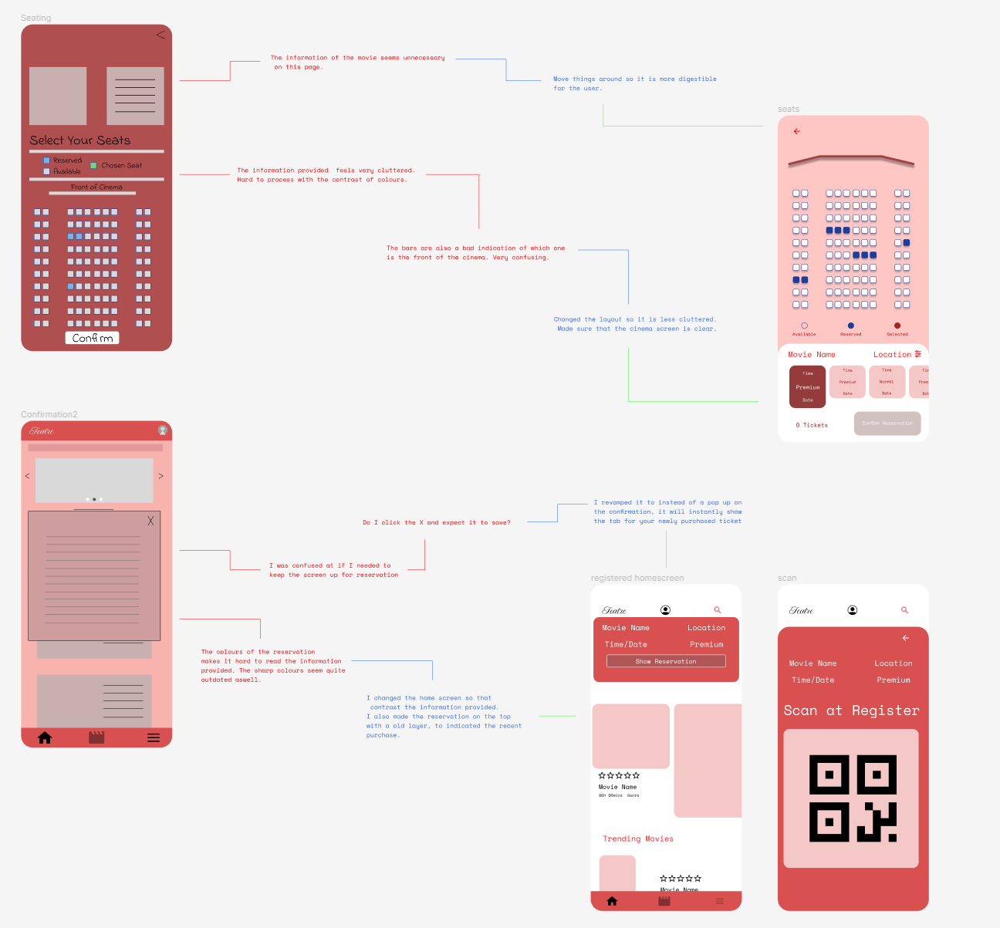
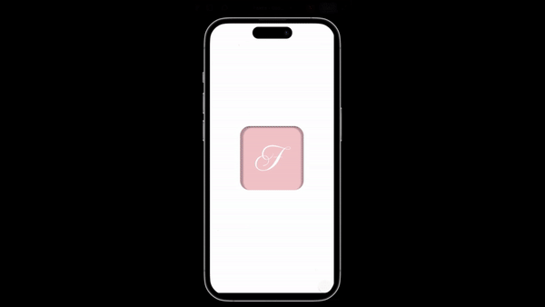
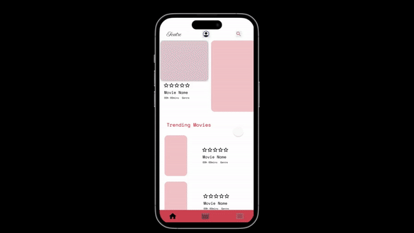
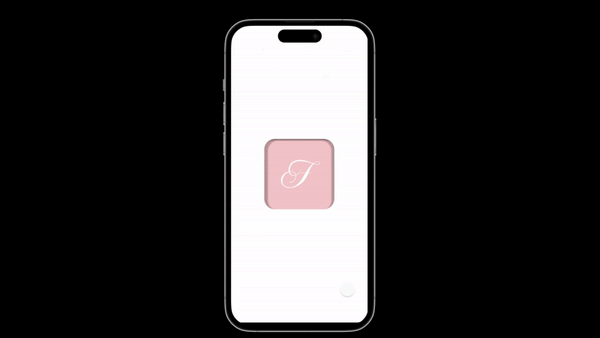

The Product
Featre, a mobile ticketing app for movie/cinema specifically targeting users who are looking to watch the latest big screen.
This was to be completed in a 2 month accelerated course to introduce the likes of UX/UI and to develop a case study for the ongoing product.
By following the layout under Google - UX Coursera, I hope to gather a more introductory understanding with UX and hope to gather a deeper research for my own benefit.
The Problem
The current movie theatre applications lack advanced features and fail to provide a seamless user experience, resulting in user dissatisfaction and inefficiencies in the movie ticket booking process.
These features include:
- Efficient and effective ticketing - from home to reservation
- Integration of review and ratings - share movie experiences
- Overall user interface - app design and flow
The Goal
To design an all in one movie navigation app, implementing both easy digital ticketing whilst
implementing gamification to movie-goers.
View Case Study Slides
Research Summary
Keeping in mind the private and confidential nature, I used a 'Concurrent Triangulation of Methods' approach consisting of interviews, questionnaires and online
ethnographies to draw as much information as possible. A comparison between the midst of digital ticketing and social media is caused by three main factors:
- Platform changes
- Managing content and Moderation
- Cultural and Regional Differences
Through the census, I was able to identified that the issues we found were large,
complex issues that required major functionality changes.
Persona
Using the necessary template, I had created some primary stakeholders that might use the application.
Low-fidelity prototyping
Using Figma, I was able to create a low-fidelity prototype for users to access and critique on the selected interface.
This became a challenge as it was my first time using the software, but through trial and error, it was an easy process.
Usability Studies
From the low-fidelity prototype, I was given the chance to user test on 3 applicants according to the user journey.
These applicants were able to give me feedback on the app, letting me know certain changes that could be necessary for a better experience.
Conducting these studies I was able to identify potential issues and areas for improvement. These areas include:


Ordering
Movie-goers are able to order tickets to various cinemas, allowing to pick seats and add food or drinks without any hassle.

Reviewing
Users are able to search particular movies and browse through reviews or even post a review themselves. This add community engagement
to the applicant.

Browsing
Due to our era of cinema, the app includes an all-in-one browser to seek any particular movie and the sypnosis of the film.
Key Takeaways
To summarise, the overall intuitive and simplified app, Featre, has not only met users' expectations, but also provided a delighful and hassle-free movie booking experience
for a wide range of users. By conducting usability tests and user feedback I have realised the importance of user-centric measures
and that quality control of a user's expectations.
Through the course, I was able to create, Featre, an all-in-one movie application for users to access their tickets, browse through movies
and even review them. This has allowed me to understand, design and evaluate appropriate methods in UX and UI, thus learning and preparing myself for future projects.
View Featre